media -- サウンドと画像¶
このモジュールは、プロジェクトで使用できるサウンドや画像などの メディアを扱います。メディアは、どのプラットフォームで利用できるかを 示すサブモジュールに分かれています。
media.ev3dev -- サウンドと画像¶
EV3 MicroPythonはev3dev上に構築されており、ev3devにはさまざまな 画像ファイルとサウンドファイルが付属しています。以下のクラスを使って それらにアクセスできます。
独自のサウンドファイルや画像ファイルをプロジェクトフォルダーに置いて、 使うこともできます。
画像ファイル¶
-
class
ImageFile¶ 標準のEV3画像へのパス。
情報
-
ACCEPT¶ 
-
BACKWARD¶ 
-
DECLINE¶ 
-
FORWARD¶ 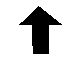
-
LEFT¶ 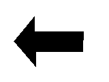
-
NO_GO¶ 
-
QUESTION_MARK¶ 
-
RIGHT¶ 
-
STOP_1¶ 
-
STOP_2¶
-
THUMBS_DOWN¶ 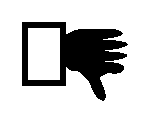
-
THUMBS_UP¶ 
-
WARNING¶ 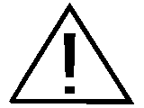
LEGO
オブジェクト
-
TARGET¶ 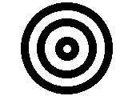
目
-
ANGRY¶
-
AWAKE¶ 
-
BOTTOM_LEFT¶ 
-
BOTTOM_RIGHT¶ 
-
CRAZY_1¶ 
-
CRAZY_2¶ 
-
DIZZY¶ 
-
DOWN¶ 
-
EVIL¶ 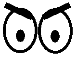
-
KNOCKED_OUT¶ 
-
MIDDLE_LEFT¶ 
-
MIDDLE_RIGHT¶ 
-
NEUTRAL¶ 
-
PINCHED_LEFT¶ 
-
PINCHED_MIDDLE¶ 
-
PINCHED_RIGHT¶ 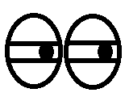
-
SLEEPING¶ 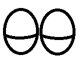
-
TIRED_LEFT¶ 
-
TIRED_MIDDLE¶ 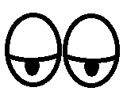
-
TIRED_RIGHT¶ 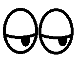
-
UP¶ 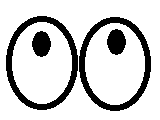
-
WINKING¶ 
-
フォント¶
-
class
Font(family=None, size=12, bold=False, monospace=False, lang=None, script=None)¶ テキストの描画に使用するフォントを表すオブジェクトです。
フォントオブジェクトは、指定されたパラメータとインストール済みの フォントに基づいて「最も」一致するフォントになります。
パラメータ: - family (str) -- 希望するフォントファミリー。既定値を使う場合は
None。 - size (int) -- 希望するフォントサイズ。ほとんどのフォントは6から24の
サイズです。これは「ポイント」サイズであり、
heightとは異なります。 - bold (bool) --
Trueの場合、太字フォントを優先します。 - monospace (bool) --
Trueの場合、等幅フォントを優先します。 複数行のテキストを揃えるときに便利です。 - lang (str) --
'en'や'zh-cn'のような言語コード。 既定の言語を使う場合はNone。[1] - script (str) --
'Runr'のようなUnicodeのスクリプト識別子、 またはNone。
[1] 言語コード
注: 使用できる言語はインストール済みのフォントに依存します。 ここにない言語コードも使用可能な場合があり、また記載の 言語コードでも十分なフォントがない場合があります。
'aa': アファル語'af': アフリカーンス語'an': アラゴン語'av': アヴァル語'ay': アイマラ語'az-az': アゼルバイジャン語'be': ベラルーシ語'bg': ブルガリア語'bi': ビスラマ語'bm': バンバラ語'br': ブルトン語'bs': ボスニア語'bua': ブリヤート語'ca': カタルーニャ語'ce': チェチェン語'ch': チャモロ語'co': コルシカ語'crh': クリミア・タタール語'cs': チェコ語'csb': カシューブ語'cy': ウェールズ語'da': デンマーク語'de': ドイツ語'ee': エウェ語'el': ギリシャ語'en': 英語'eo': エスペラント語'es': スペイン語'et': エストニア語'eu': バスク語'ff': フラ語'fi': フィンランド語'fil': フィリピノ語'fj': フィジー語'fo': フェロー語'fr': フランス語'fur': フリウリ語'fy': 西フリジア語'ga': アイルランド語'gd': ゲール語'gl': ガリシア語'gv': マン島語'ha': ハウサ語'haw': ハワイ語'he': ヘブライ語'ho': ヒリ・モツ語'hr': クロアチア語'hsb': 上ソルブ語'ht': ハイチ語'hu': ハンガリー語'ia': インターリングア'id': インドネシア語'ie': インターリングエ'ik': イヌピアック語'io': イド語'is': アイスランド語'it': イタリア語'ja': 日本語'jv': ジャワ語'ki': キクユ語'kj': クワニャマ語'kl': カラーリット語'ko': 韓国語'ku-tr': クルド語'kum': クムク語'kw': コーンウォール語'kwm': クワンビ語'la': ラテン語'lb': ルクセンブルク語'lez': レズギ語'lg': ガンダ語'li': リンブルグ語'ln': リンガラ語'lt': リトアニア語'lv': ラトビア語'mg': マダガスカル語'mh': マーシャル語'mi': マオリ語'mk': マケドニア語'mn-mn': モンゴル語'mo': モルドバ語'ms': マレー語'mt': マルタ語'na': ナウル語'nb': ノルウェー語（ブークモール）'nds': 低地ドイツ語'ng': ンドンガ語'nl': オランダ語'nn': ノルウェー語（ニーノシュク）'no': ノルウェー語'nr': 南ンデベレ語'nso': 北ソト語'nv': ナバホ語'ny': チェワ語'oc': オック語'om': オロモ語'os': オセット語'pap-an': パピアメント語（オランダ領アンティル）'pap-aw': パピアメント語（アルバ）'pl': ポーランド語'pt': ポルトガル語'qu': ケチュア語'quz': ケチュア語（クスコ）'rm': ロマンシュ語'rn': ルンディ語'ro': ルーマニア語'ru': ロシア語'rw': キニアルワンダ語'sc': サルデーニャ語'sco': スコットランド語'se': 北部サーミ語'sel': セリクプ語'sg': サンゴ語'sk': スロバキア語'sl': スロベニア語'sm': サモア語'sma': 南部サーミ語'smj': ルレ・サーミ語'smn': イナリ・サーミ語'sms': スコルト・サーミ語'sn': ショナ語'so': ソマリ語'sq': アルバニア語'sr': セルビア語'ss': スワティ語'st': 南ソト語'su': スンダ語'sv': スウェーデン語'sw': スワヒリ語'tk': トルクメン語'tl': タガログ語'tn': ツワナ語'to': トンガ語'tr': トルコ語'ts': ツォンガ語'ty': タヒチ語'uk': ウクライナ語'uz': ウズベク語'vo': ヴォラピュク語'vot': ヴォート語'wa': ワロン語'wen': ソルブ語'wo': ウォロフ語'xh': コサ語'yap': ヤップ語'yi': イディッシュ語'za': チワン語'zh-cn': 中国語（中国）'zh-sg': 中国語（シンガポール）'zh-tw': 中国語（台湾）'zu': ズールー語
-
DEFAULT= Font('Lucida', 12)¶ 既定のフォント。
-
family¶ フォントのファミリー名を取得します。
-
style¶ フォントスタイルを表す文字列を取得します。
"Regular" または "Bold" になります。
-
width¶ フォントの最も幅の広い文字の幅を取得します。
-
height¶ フォントの高さを取得します。
-
text_width(text)¶ このフォントでテキストを描画したときの幅を取得します。
パラメータ: text (str) -- テキスト。 戻り値: 幅（ピクセル単位）。 戻り値の型: int
-
text_height(text)¶ このフォントでテキストを描画したときの高さを取得します。
パラメータ: text (str) -- テキスト。 戻り値: 高さ（ピクセル単位）。 戻り値の型: int
さらにフォントを調べる
Pybricksは内部でフォントに Fontconfig を使用しています。 Fontconfigのコマンドラインツールを使うと、利用可能なフォントを より詳しく調べられます。そのためには、ev3devデバイスブラウザーで EV3ブロックを右クリックし、 Open SSH Terminal をクリックします。 そして次のいずれかのコマンドを入力します:
# 利用可能なフォントファミリーを一覧表示します。 fc-list :scalable=false family # Font.DEFAULT と同様の検索を実行します。 fc-match :scalable=false:dpi=119:family=Lucida:size=12 # Font(size=24,lang=zh-cn) と同様の検索を実行します。 fc-match :scalable=false:dpi=119:size=24:lang=zh-cn
Pybricksではビットマップフォント（
scalable=false）のみ 使用でき、EV3の画面は1インチあたり119ピクセル（dpi=119）です。- family (str) -- 希望するフォントファミリー。既定値を使う場合は
画像の操作¶
EV3の画面に直接描画する代わりに、以下の Image クラスを使って
画像ファイルを作成・操作できます。
-
class
Image(source, sub=False)¶ グラフィックス画像を表すオブジェクト。画像のメモリ内コピー、 または画面に表示される画像のいずれかになります。
パラメータ: - source (str or Image) --
画像のソース。
sourceが文字列の場合、その文字列で指定された ファイルパスから画像が読み込まれます。.pngファイルのみ サポートされます。特殊ケースとして、文字列が_screen_の 場合、画像は画面に直接描画するように設定されます。Imageが指定された場合、新しいオブジェクトにはsource画像オブジェクトのコピーが格納されます。 - sub (bool) --
subがTrueの場合、この画像オブジェクトはsource画像のサブ画像として動作します（これはsourceの型がImageの場合のみ有効で、strの場合は 無効です）。sub=Trueの場合は、追加のキーワード引数x1、y1、x2、y2が必要です。これらはサブ画像の範囲として 使用される、source画像内の左上と右下の座標を指定します。
-
static
empty(width=<screen width>, height=<screen height>)¶ 新しい空の
Imageオブジェクトを作成します。パラメータ: - width (int) -- 画像の幅（ピクセル単位）。
- height (int) -- 画像の高さ（ピクセル単位）。
戻り値: すべてのピクセルが
Color.WHITEに設定された新しい画像。戻り値の型: Raises: TypeError--widthまたはheightが数値ではありません。ValueError--widthまたはheightが1未満です。RuntimeError-- 新しい画像の割り当てに問題がありました。
テキストの描画
画像にテキストを描画する方法は2つあります。
draw_text()は テキストを画像上に正確に配置でき、print()は自動的に 新しい行にテキストを出力します。-
draw_text(x, y, text, text_color=Color.BLACK, background_color=None)¶ this image にテキストを描画します。
set_font()で直前に設定されたフォントが使われます。 フォントがまだ設定されていない場合はFont.DEFAULTが 使われます。パラメータ:
-
print(*args, sep=' ', end='\n')¶ this image にテキストの行を出力します。
このメソッドは組み込みの
print()関数と同じように動作しますが、 代わりに this image に書き込みます。フォントは
set_font()で設定できます。フォントが設定されて いない場合はFont.DEFAULTが使われます。テキストは常に 白背景に黒い文字で出力されます。組み込みの
print()とは異なり、テキストが this image に 収まらないほど広い場合でも折り返されず、単に切り捨てられます。 ただしテキストが画像の下端を超える場合は、画像全体が上に スクロールし、 this image の下部の新しい空白領域にテキストが 出力されます。パラメータ: - * (object) -- 出力する0個以上のオブジェクト。
- sep (str) -- 出力される各オブジェクトの間に挟まれる区切り文字。
- end (str) -- 最後のオブジェクトの後に出力される行末文字。
-
set_font(font)¶ this image への書き込みに使うフォントを設定します。
このフォントは
draw_text()とprint()の両方に使われます。パラメータ: font ( Font) -- 使用するフォント。
画像の描画
画像の上に別の画像のコピーを描画できます。画像の一部を コピーするには、サブ画像の使用も検討してください。
-
draw_image(x, y, source, transparent=None)¶ this image の上に
source画像を描画します。パラメータ:
図形の描画
点、線、矩形、円などの基本的な図形を描画するメソッドです。
-
draw_pixel(x, y, color=Color.BLACK)¶ this image に1ピクセルを描画します。
パラメータ: - x (int) -- ピクセルのX座標。
- y (int) -- ピクセルのY座標。
- color (Color) -- ピクセルの色。
-
draw_line(x1, y1, x2, y2, width=1, color=Color.BLACK)¶ this image に線を描画します。
パラメータ: - x1 (int) -- 線の開始点のX座標。
- y1 (int) -- 線の開始点のY座標。
- x2 (int) -- 線の終了点のX座標。
- y2 (int) -- 線の終了点のY座標。
- width (int) -- 線の幅（ピクセル単位）。
- color (Color) -- 線の色。
-
draw_box(x1, y1, x2, y2, r=0, fill=False, color=Color.BLACK)¶ this image に矩形を描画します。
パラメータ: - x1 (int) -- 矩形の左辺のX座標。
- y1 (int) -- 矩形の上辺のY座標。
- x2 (int) -- 矩形の右辺のX座標。
- y2 (int) -- 矩形の下辺のY座標。
- r (int) -- 矩形の角の半径。
- fill (bool) --
Trueの場合、矩形がcolorで塗りつぶされます。 それ以外の場合は矩形の輪郭のみ描画されます。 - color (Color) -- 矩形の色。
-
draw_circle(x, y, r, fill=False, color=Color.BLACK)¶ this image に円を描画します。
パラメータ: - x (int) -- 円の中心のX座標。
- y (int) -- 円の中心のY座標。
- r (int) -- 円の半径。
- fill (bool) --
Trueの場合、円がcolorで塗りつぶされます。 それ以外の場合は円周のみ描画されます。 - color (Color) -- 円の色。
画像のプロパティ
-
width¶ this image の幅をピクセル単位で取得します。
-
height¶ this image の高さをピクセル単位で取得します。
画像全体の置き換え
-
clear()¶ this image を消去します。this image のすべてのピクセルが
Color.WHITEに設定されます。
-
load_image(source)¶ this image を消去してから、
source画像を this image の中央に描画します。パラメータ: source (Image or str) -- ソースの Image。引数が文字列の場合、source画像はファイルから読み込まれます。
画像の保存
-
save(filename)¶ this image を
.pngファイルとして保存します。パラメータ: filename (str) -- 保存するファイルのパス。
Raises: TypeError--filenameが文字列ではありません。OSError-- ファイルの保存に問題がありました。
- source (str or Image) --